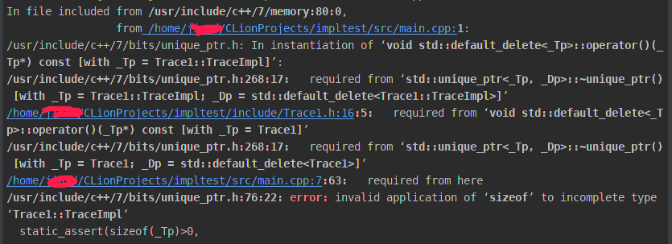

原文连接:https://www.cnblogs.com/jason1990/p/11994697.html
Impl模式早就有过接触（本文特指通过指针完成impl），我晓得它具有以下优点：
- 减少头文件暴露出来的非必要内部类(提供静态库，动态库时尤其重要)；
- 减小文件间的编译依存关系，大型代码库的编译时间就不会那么折磨人了。
Impl会带来性能的损耗，每次访问都因为指针增加了间接性，还有一个微小的指针内存消耗。但是基于以上优点，除非你十分确定它造成了性能损耗，否则就让它存在吧。
Qt中大量使用Impl，具体可见https://wiki.qt.io/D-Pointer中关于Q_D和Q_Q宏的解释。
然而，如何使用智能指针，我是说基于std::unique_ptr实现正确的impl模式，就有点意思了。
错误做法
#include <boost/noncopyable.hpp>
#include <memory>
class Trace1 : public boost::noncopyable {
public:
Trace1();
~Trace1() = default;
void test();
private:
class TraceImpl;
std::unique_ptr<TraceImpl> _impl;
};这是我初版代码，关于_impl的实现细节，存放于cpp中，如下所示：
class Trace1::TraceImpl {
public:
TraceImpl() = default;
static std::string test() {
return "hello trace1";
}
};
Trace1::Trace1() :
_impl(std::make_unique<Trace1::TraceImpl>()) {
}
void Trace1::test() {
std::cout << _impl->test() << std::endl;
}很无情，我遇到了错误，错误如下所示：

为什么会这样呢，报错信息提示TraceImpl是一个不完整的类型。
其实，就是编译器看到TraceImpl，无法在编译期间确定TraceImpl的大小。此处我们使用的是std::unique_ptr，其中存放的是一个指针，没必要知道TraceImpl的具体大小（换成std::shared_ptr就不会这个报错）。
错误分析
往上看报错信息，发现std::unique_ptr的析构函数有点意思：
/usr/include/c++/7/bits/unique_ptr.h: In instantiation of ‘void std::default_delete<_Tp>::operator()(_Tp*) const [with _Tp = Trace1::TraceImpl]’:
/usr/include/c++/7/bits/unique_ptr.h:268:17: required from ‘std::unique_ptr<_Tp, _Dp>::~unique_ptr() [with _Tp = Trace1::TraceImpl; _Dp = std::default_delete<Trace1::TraceImpl>]’
/home/jinxd/CLionProjects/impltest/include/Trace1.h:16:5: required from ‘void std::default_delete<_Tp>::operator()(_Tp*) const [with _Tp = Trace1]’
/usr/include/c++/7/bits/unique_ptr.h:268:17: required from ‘std::unique_ptr<_Tp, _Dp>::~unique_ptr() [with _Tp = Trace1; _Dp = std::default_delete<Trace1>]’报错信息中，有两段提到了析构函数，而且都是默认析构函数:std::default_delete<_Tp>。应该知道，我们的代码在编译的时候，会被编译器往里面添加点作料。按照c++的哲学就是，你不需要知道我们添加了什么，你只需要晓得添加后的结果是什么。可是，为了解决错误，我们必须知道大概添加了什么。
代码中，Trace1的析构函数标记为default，函数体中无具体代码，Trace1的析构函数有很大的可能性被inline了。如果函数被inline了，那么引用Trace1.h的main文件中，析构函数会被文本段落展开。
以前我就就在想，析构函数中没有代码，展开也不应该产生影响。错就错在，编译之后的析构函数被扩展了，塞入了_impl的销毁代码。销毁_impl必然会调用到std::unique_ptr的析构函数。std:unique_ptr在销毁的时候，会调用构造函数中传来的析构函数（如果你没有显式提供析构函数，那么就是用编译器扩展的默认析构函数）。此处调用TraceImpl的默认析构函数，发现类只有前置声明(具体实现在Trace1.cpp文件中，main中没有引入此文件)，因此不知道TraceImpl的实际大小。
问题出来了，为什么需要知道TraceImpl的实际大小呢？可以认为c++中的new是malloc的封装，执行new的时候，其实就是根据类的大小malloc固定大小的空间，反之，delete也就是释放掉指定大小的空间。你不提供声明，这就让编译器很为难，只能报错了。
解决方式
解决方式很简单，一切都是inline引起的，那么我们就让析构函数outline。通过这种方式，将Trace1的析构函数实现转移至Trace1.cpp中，从而发现TraceImpl的具体实现。代码如下所示：
// Trace1.h
class Trace1 : public boost::noncopyable {
public:
Trace1();
~Trace1();
void test();
private:
class TraceImpl;
std::unique_ptr<TraceImpl> _impl;
};
// Trace1.cpp
class Trace1::TraceImpl {
public:
TraceImpl() = default;
static std::string test() {
return "hello trace1";
}
};
Trace1::Trace1() :
_impl(std::make_unique<Trace1::TraceImpl>()) {
}
Trace1::~Trace1() = default;
void Trace1::test() {
std::cout << _impl->test() << std::endl;
}如此操作，析构函数就可以看见TraceImpl的声明，于是就能正确的执行析构操作。
换个姿势
上文中提及了，std::unique_ptr的构造函数中，第二个入参其实是一个仿函数，那么我们也可以通过仿函数解决这个问题，代码如下所示：
// Trace2.h
class Trace2 : public boost::noncopyable {
public:
Trace2();
~Trace2() = default;
void test();
private:
class TraceImpl;
class TraceImplDeleter {
public:
void operator()(TraceImpl *p);
};
std::unique_ptr<TraceImpl, TraceImplDeleter> _impl;
};
// Trace2.cpp
class Trace2::TraceImpl {
public:
TraceImpl() = default;
static std::string test() {
return "hello trace2";
}
};
void Trace2::TraceImplDeleter::operator()(Trace2::TraceImpl *p) {
delete p;
}
Trace2::Trace2() :
_impl(new Trace2::TraceImpl, Trace2::TraceImplDeleter()) {
}
void Trace2::test() {
std::cout << _impl->test() << std::endl;
}是的，仿函数的实现置于Trace2.cpp中，完美解决问题。
不过我不喜欢这样的写法，因为没法使用std::make_unique初始化_impl，原因就这么简单。
PS:
如果您觉得我的文章对您有帮助，请关注我的微信公众号，谢谢!